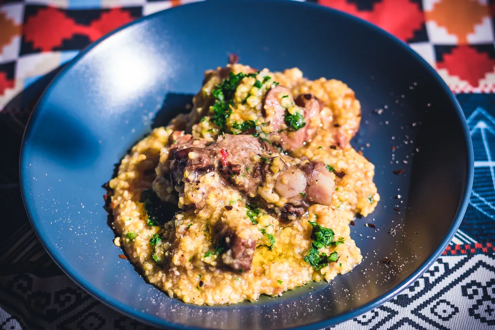
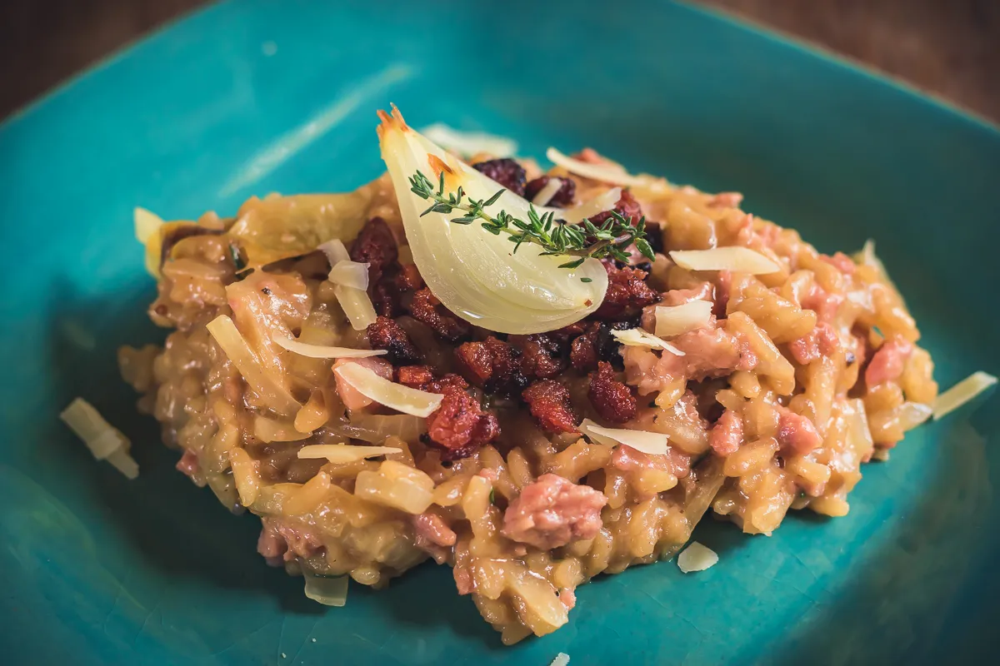
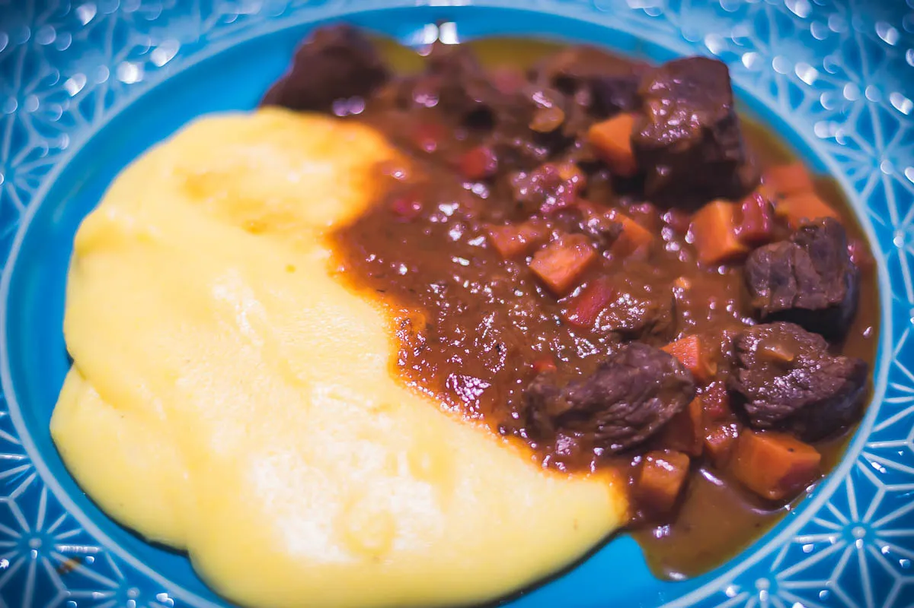
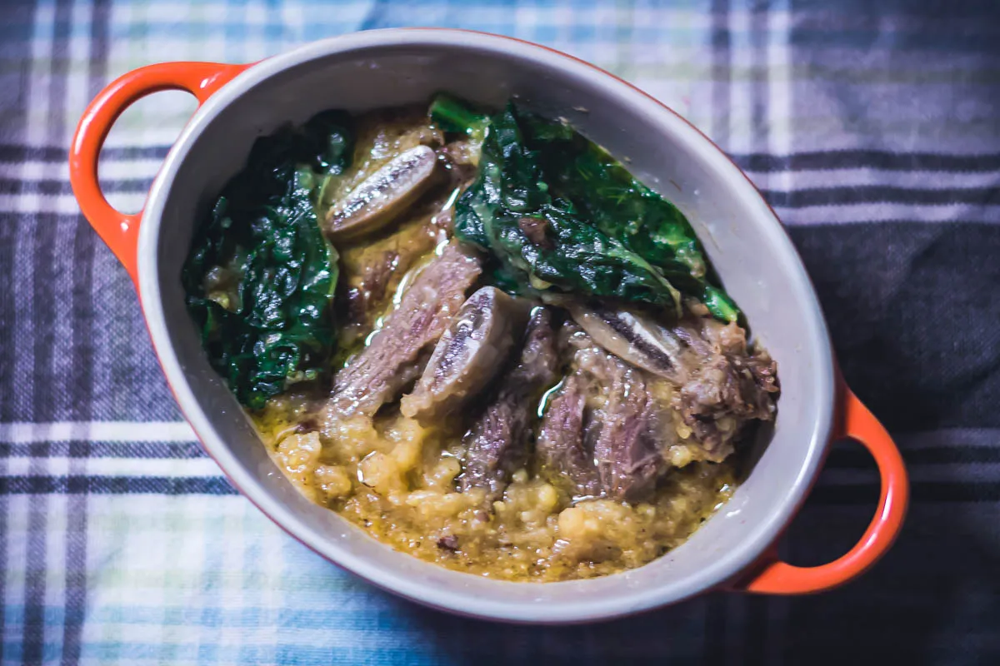

Quirera com Carne de Porco Defumada – Vida Cabocla

Foi só recentemente que minha mãe começou a fazer essa quirera com carne de porco defumada aqui em casa e
nossa, foi só sucesso! Eu já havia comido no curso de culinária a quirera com costelinha de porco normal
e gostei bastante, mas a mãe tem um tempero e um modo de fazer a comida que deixa tudo com um gosto
muito especial! Estou aprendendo cada dia mais com ela e esse jeito caboclo de cozinhar.
Risoto de Linguiça, Cebola e Tomilho – Alimentando amizades

Esses dias eu pensei “nossa, faz tempo que não faço risoto!”. Aí me
lembrei desse risoto de linguiça, cebola e tomilho que adaptei do livro “A Itália de Jamie”, do Jamie
Oliver, e que testei ano passado num jantar que fiz em casa para as minhas amigas do antigo trabalho!
Como elas super aprovaram a receita da forma que fiz (e eu também), resolvi trazê-la aqui para o blog.
Goulash com Polenta – A vida é melhor com primos

Essa receita é especial por que tem a ver com uma lembrança muito boa e que tem tudo a ver com o dia de
hoje. O Goulash não é um prato muito comum (é um prato tradicional húngaro, muito antigo), mas eu
aprendi a fazê-la por causa do meu primo Renato. Primo esse meu que faz aniversário junto comigo, hoje!
Parabéns pra nós!! (eu disse que tinha muitos aniversários em outubro na família rs).
Costela com Pirão de Farinha de Milho da Dona Cida

Minha mãe é uma figura! Como todo mundo, eu acho que ela é diferente das outras mães. Mas a verdade é que
todas, com seus defeitos e qualidades, são únicas. E a Dona Cida é única, assim como essa receita de
costela com pirão de farinha de milho e tantas outras que ela me ensinou